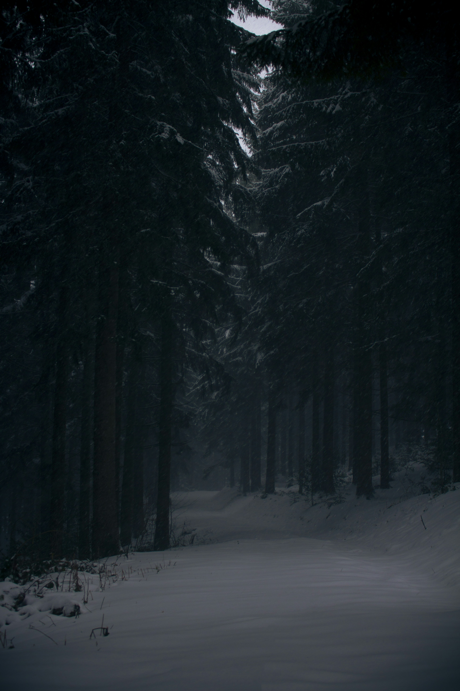

You Chose the Left path
You venture through the left path. The snow surrounding you amasses more and more as you trek.The cold is becoming unbearable and the forest seems to be endless. You feel yourself grow tired, your legs feel like they'll snap from how frozen they are. The snow seems like comfortable enough to sit on for you to take a break, a break you desprately need.
But you also notice it is growing darker, which might mean danger.You feel a primal sense of surrival that urges you to push forward.
What will you do?
"pine trees covered by snow at daytime" by samuel_s. Unsplash License.Unsplash. February 2, 2018